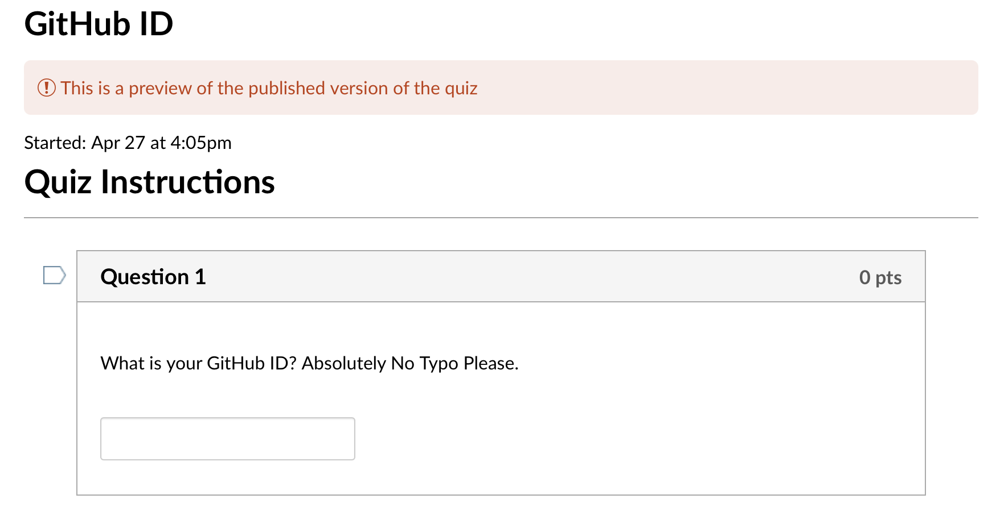
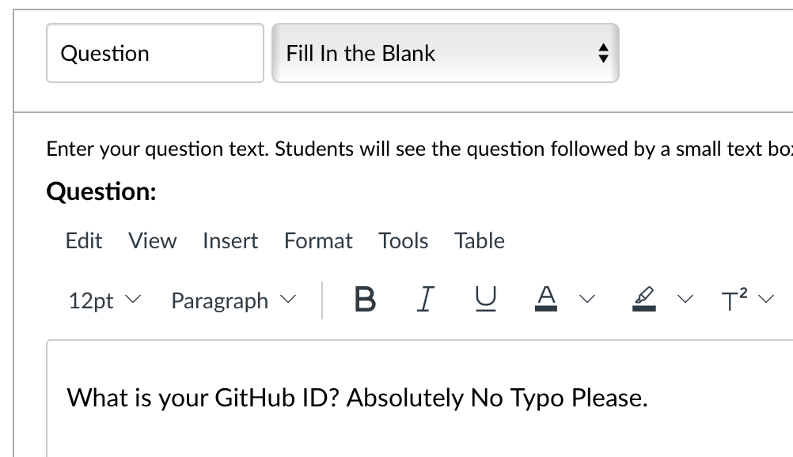

credentials_fp = "../credentials.json"Canvas Group Creation
Create canvas group via Canvas API
CanvasGroup
CanvasGroup (credentials_fp='', API_URL='https://canvas.ucsd.edu', course_id='', verbosity=0)
Initialize Canvas Group within a Group Set and its appropriate memberships
| Type | Default | Details | |
|---|---|---|---|
| credentials_fp | str | credential file path. Template of the credentials.json | |
| API_URL | str | https://canvas.ucsd.edu | the domain name of canvas |
| course_id | str | Course ID, can be found in the course url | |
| verbosity | int | 0 | Controls the verbosity: 0 = Silent, 1 = print all messages |
Canvas Authentication
All the credentials should be stored at a json file in the following format.
If API_KEY and/or course_id was passed into the initializer, it will call the following methods to load the relevant information about your canvas and your canvas course.
# instansiate a new Canvas Group Object
# if your class size is large, it will take around 2 minutes to grab all student info.
API_URL = "https://canvas.ucsd.edu/"
# your canvas course id, found on the top of canvas url
course_id = ...
cg = CanvasGroup(credentials_fp, API_URL, course_id=course_id, verbosity=1)Authorization Successful!
Course Set: COGS 118A - Supvr/Mach Learning Algorithms - Fleischer [SP23]
Getting List of Users... This might take a while...
Users Fetch Complete! The course has 174 users.Create / Assign Group in One Call
CanvasGroup.assign_canvas_group
CanvasGroup.assign_canvas_group (group_name:str, group_members:[<class'str'>], in_group_category:str)
Create new groups and assign group member into the class in the self.group_category
| Type | Details | |
|---|---|---|
| group_name | str | group name, display on canvas |
| group_members | [<class ‘str’>] | list of group member’s SIS Login |
| in_group_category | str | specify which group category the group belongs to |
| Returns | (<class ‘canvasapi.group.Group’>, [<class ‘str’>]) | list of unsuccessful join |
In this way, we could directly create canvas group by specifying the group name, members info, and the group category directly.
member1 = "email"
group, unsuccessful = cg.assign_canvas_group(
group_name="TestGroup000",
group_members=[member1],
in_group_category="Test"
)
assert len(unsuccessful)==0In Group Set: Test,
Group TestGroup000 Created!Note that it will throw a Key Error if the target in_group_category did not exist in the course.
cg.assign_canvas_group(
group_name="Failed",
group_members=[member1],
in_group_category="Group Project 2"
)KeyError: 'Group Project 2 did not found in the group categories. Try to create one with CanvasGroup.create_group_category'Lower Level Methods
Alternatively, you can manually set them after you created the CanvasGroup object
CanvasGroup.auth_canvas
CanvasGroup.auth_canvas (credentials_fp:str)
Authorize the canvas module with API_KEY
| Type | Details | |
|---|---|---|
| credentials_fp | str | the Authenticator key generated from canvas |
CanvasGroup.set_course
CanvasGroup.set_course (course_id:int)
Set the target course by the course ID
| Type | Details | |
|---|---|---|
| course_id | int | the course id of the target course |
The following tutorial and examples demonstrates how to create and set a Group Category within a course context.
Create / Set Target Group Category (Set)
CanvasGroup.get_group_categories
CanvasGroup.get_group_categories ()
Grab all existing group category (group set) in this course
# list all current group category
list(cg.get_group_categories().keys())['Final Project', 'Student Groups', 'Test']CanvasGroup.create_group_category
CanvasGroup.create_group_category (params:dict)
Create group category (group set) in this course
| Type | Details | |
|---|---|---|
| params | dict | the parameter of canvas group category API @ this link |
| Returns | GroupCategory | the generated group category object |
params = {
"name": "TEST-GroupProject",
"group_limit": 5
}# create a new category
group_category = cg.create_group_category(params)# Check whether we successfully create a new group
list(cg.get_group_categories().keys())['Final Project', 'Student Groups', 'Test', 'TEST-GroupProject']When a group category is already created, we cannot create another group with the same name. To switch the group category destination of group creation, use the set_group_category methods.
CanvasGroup.set_group_category
CanvasGroup.set_group_category (category_name:str)
| Type | Details | |
|---|---|---|
| category_name | str | the target group category |
| Returns | GroupCategory | target group category object |
group_category = cg.set_group_category("TEST-GroupProject")Create a Group Inside the Target Group Category
CanvasGroup.create_group
CanvasGroup.create_group (params:dict)
Create canvas group under the target group category
| Type | Details | |
|---|---|---|
| params | dict | the parameter of canvas group create API at this link |
| Returns | Group | the generated target group object |
params = {
"name": "TEST-GROUP1",
"join_level": "invitation_only"
}
group1 = cg.create_group(params)
print(group1)In Group Set: TEST-GroupProject,
Group TEST-GROUP1 Created!
TEST-GROUP1 (122854)Assign Student to the Group
CanvasGroup.join_canvas_group
CanvasGroup.join_canvas_group (group:canvasapi.group.Group, group_members:[<class'str'>])
Add membership access of each group member into the group
| Type | Details | |
|---|---|---|
| group | Group | the group that students will join |
| group_members | [<class ‘str’>] | list of group member’s SIS Login (email prefix, before the @.) |
| Returns | [<class ‘str’>] | list of unsuccessful join |
member1 = "email"
cg.join_canvas_group(group1, [member1])[]Fetch Students’ GitHub username
CanvasGroup.fetch_username_from_quiz
CanvasGroup.fetch_username_from_quiz (quiz_id:int, csv_name='github_id.csv', col_index=7)
Fetch the GitHub user name from the canvas quiz
| Type | Default | Details | |
|---|---|---|---|
| quiz_id | int | quiz id of the username quiz | |
| csv_name | str | github_id.csv | csv output name. |
| col_index | int | 7 | canvas quiz generated csv’s question field column index |
| Returns | dict | {SIS Login ID: github} dictionary |
An example of the quiz question looks like the followings

On canvas, this is a fill in the blank question with the following raw format:

quiz_id = 139061
github_ids = cg.fetch_username_from_quiz(
quiz_id=quiz_id
)Quiz: GitHub ID fetch!
Generating Student Analaysis...
[====================] 100%
Report Generated!
The Question asked is 1389031: What is your GitHub ID? Absolutely No Typo Please..
Make sure this is the correct question where you asked student for their GitHub id.
If you need to change the index of columns, change the col_index argument of this call.